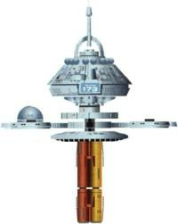

|
|
Base stellare 173 |
|
|||
|  |
Stazione della Federazione nei pressi della
Zona Neutrale Romulana,
nel settore 23. Nel 2365 si
celebra il processo per determinare se
Data sia un essere senziente. Il capitano
Phillipa Louvois presta
servizio su questa base (The Measure of a Man).
Sonya Gomez è uno dei membri dell'equipaggio dell'Enterprise
salito a
bordo della nave da questa base (Q Who?).